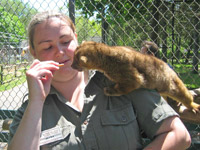

News And Announcements
Long Island Game Farm Celebrates Gentle Gerry the Giraffe's 10th Birthday
The Long Island Game Farm announced today that it will celebrate Gentle Gerry the Giraffe's 10th birthday on Saturday, July 2nd (rain date July 3rd) with a day filled with educational and family-oriented entertainment.
On Saturday, at about 12:30 p.m., the staff of the Long Island Game Farm will present Gentle Gerry with a vegetarian birthday cake made of carrots and will sing the song, "Happy Birthday." Children of all ages are invited to celebrate, too.
In addition, the Game Farm's featured summertime attraction, the Big Cat Encounter, will go on at 12:30 p.m., 2:30 p.m. and 4:30 p.m. Visitors will be able to see a show featuring a dozen rare lions and tigers, each rescued by the Rosaire Family. Between shows visitors can get within four feet of the animals at the Game Farm's "Big Cat Habitat".
"It is hard to believe that Gerry is already hitting the big 1-0, that's a great milestone in the life of a giraffe," Diane Novak, president and co-founder of the Game Farm said. "The children absolutely love him and enjoy feeding and petting him. He's as gentle today as he was when he was a calf."
Long Island Game Farm Announces Naming Contest For Kinkajous
The Long Island Game Farm announced today a Long Island-wide contest to name a pair of Kinkajous, the pint-sized rainforest creatures that resemble raccoons.
The Kinkajous (pronounced king-kuh-joo), one male and one female, are two of the newest arrivals at the Game Farm, this season. They are a breeding pair and are expected to have a baby Kinkajou next spring.
The Game Farm will be accepting name submissions via email (through the contact form), regular mail or in-person at the Game Farm from children 12 years of age and younger. The deadline for submitting names is July 15, 2005.
Submitted names will be reviewed by Game Farm staff and the final decision will be made by co-owners, Diane and Melinda Novak. The winner, along with the Kinkajous' new names will be announced on July 20, 2005. The contest winner will receive a Big Cat Giveaway Family Four Pack which includes free admission to the Game Farm for two adults and two children and a picture taken with the kinkajous.
"This contest is a fun way for the kids to get involved with the animals. Gentle Gerry the Giraffe was named by one of our park guests," said Diane Novak, Co-owner of the Long Island Game Farm. "I think that it makes the name more special when one of our visitors gets to choose it. I know that its going to be very difficult to pick a winner from all of the creative entries that we are sure to receive."
Long Island Game Farm Welcomes
Jackson and Sheila the Kangaroos

The Long Island Game Farm is welcoming its new editions, Jackson and Sheila, Red Kangaroos, to the park for the 2005 season. The kangaroos are 1 year and 2 years old, respectively, and will now make the Game Farm their new home. The Game Farm is also pleased to announce that Sabrett, maker of its famous Sabrett hotdogs, is sponsoring its new Kangaroo viewing area.

Gentle Gerry The Giraffe Arrives at the
Long Island Game Farm for 2005 Season

Pictured is Glen Gilmore, Zoo Manager of the Long Island Game Farm, leading Gentle Gerry the Giraffe, the world's friendliest giraffe, through the Long Island Game Farm towards his 2005 season quarters. Gerry arrived at the Game Farm this past week from his winter quarters in Tennessee, just in time for Mothers' Day.
Barbados Sheep Born at the Long Island Game Farm

Pictured are three newborn Barbados Sheep born at the Long Island Game Farm early this spring with their mother. One of the best times of the year to visit the Game Farm is early Spring, when many of the animals have given birth to newborns. This year's newborns include donkeys, rabbits, sheep, ducks, goats, as well as several Ring-Tailed Lemurs.
Susan Mary and Stanley Novak Hofstra University Endowed Memorial Scholarship Awarded

Pictured (left - right) Melinda Novak, co-owner of the Long Island Game Farm; Diane Novak, co-owner of the Long Island Game Farm; Alison Meilewski, scholarship recipient. Meilewski is a senior Speech Communication major from Port Washington, New York and is seen being presented with a scholarship award from Melinda and Diane Novak. The scholarship was established to honor the memories of Stanley John Novak, the Game Farm's co-founder and his daughter Susan Mary Novak.
Baby Buffalo Born at the Long Island Game Farm

Pictured is Boo, the baby buffalo and Jennifer Riehl, Zookeeper at the Long Island Game Farm. Boo was born on Halloween, October 31, 2004. Buffalo are commonly found in national parks in the United States and Canada and can be seen at the Game Farm.
Long Island Game Farm Opens 36th Season April 23rd
Experience the Miracle of Spring by Visiting Game Farm Newborns
The Long Island Game Farm announced today that it will kick off its 2005 season on Saturday, April 23rd and will remain open 7 days per week through Columbus Day weekend, Monday, October 10th. This will mark the Game Farm's 36th year of providing high quality fun and education to families throughout Long Island.
From alligators to lemurs to zebra and scores of animals in between, the Long Island Game Farm Wildlife and Children's Zoo has many interactive areas where guests can touch and, unlike most zoos, actually feed the animals! During the summer season, a 500 seat amphitheater serves as center stage for entertainment and educational programs. Children can also enjoy one of the carnival-style rides such as the carousel, Rio Grande Train, or Teacups. The Game Farm offers pony rides as well. The "Big Cat Encounter" will return for its third season in the Game Farm's 500 seat Amphitheater from May 28th through September 5th with two daily showings during weekdays and three showings on weekends. During the months of July and August, a week-long children's camp - Camp Zoo will return.
"We are very excited to begin our 36th season of serving the Long Island regional community. Our Park provides an ideal moderate-cost destination where the whole family can learn and interact with nature and the animal kingdom. Again, this year, thousands of young students will pass through our park and learn first-hand about what they are taught in school," said Diane Novak, Co-Owner and President of the Long Island Game Farm.
One of the best times of the year to visit the Game Farm is early Spring, when many of the animals have given birth to newborns. This year's newborns include Barbados Sheep, donkeys, rabbits, sheep, ducks, goats, as well as several Ring-Tailed Lemurs. In the past four years, 10 baby lemurs have been born in the Long Island Game Farm.
"It only takes a few minutes at the Game Farm at this time of the year to enjoy the miracle of Spring as you interact with all of the newborns around the park," said Novak.
The Game Farm continues to plan its 2005 special events. This year's events will include Gentle Gerry the Giraffe's Birthday, Save the Cats Day, Child Safety Day, Autism Awareness Day, Breast Cancer Awareness Day, and a Harvest Festival.